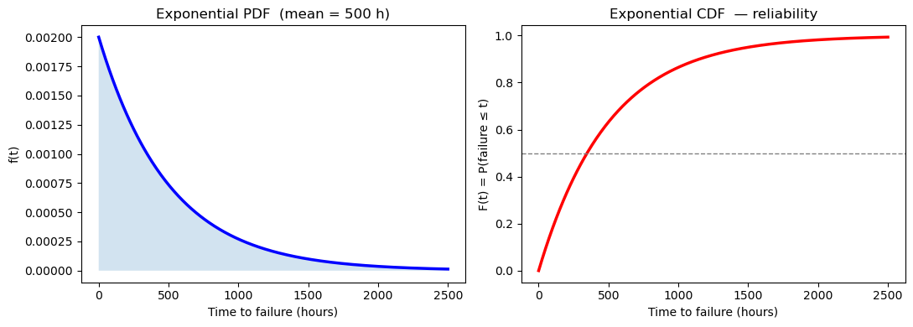
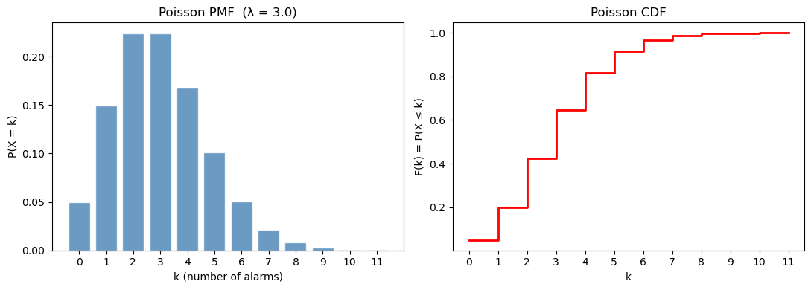
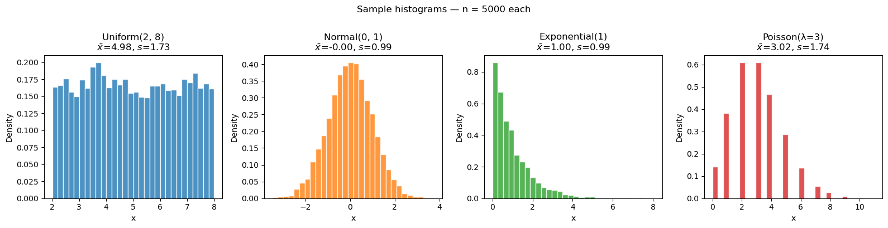
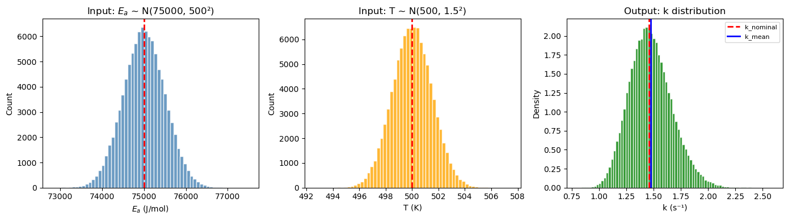
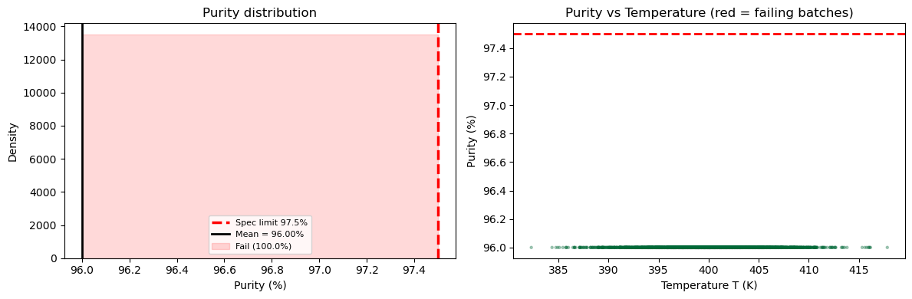
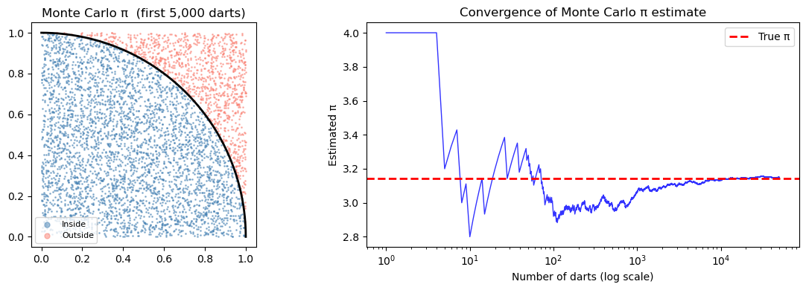
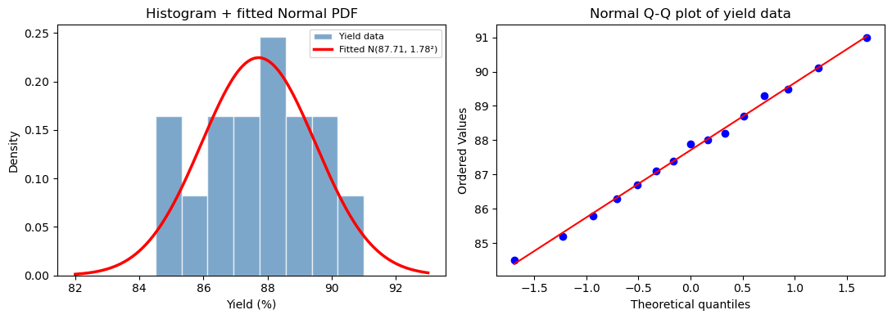
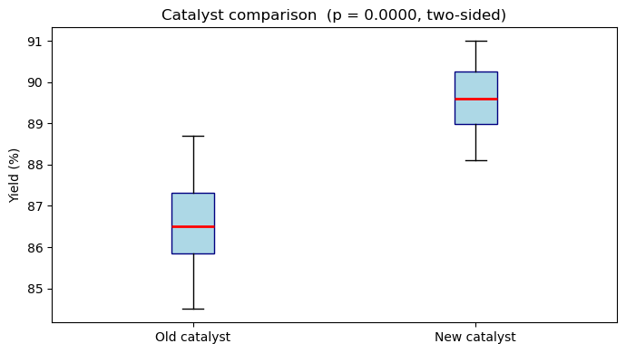

Chapter 13: Statistics & Random Sampling & Distributions#
Topics Covered:
Descriptive statistics: mean, median, variance, standard deviation, percentiles
Random number generation with
numpy.randomKey probability distributions: uniform, normal, exponential, Poisson
The Central Limit Theorem and why it matters in engineering
Monte Carlo simulation: error propagation and process reliability
Confidence intervals and hypothesis testing basics
# ── All imports ─────────────────────────────────────────────────────────────
import numpy as np
import matplotlib.pyplot as plt
from scipy import stats
13.1 Motivation: Why Statistics in Chemical Engineering?#
Real engineering data is never perfect. Thermocouples drift. Flow meters have noise. Reaction yields vary batch to batch. Laboratory measurements have inherent uncertainty.
Statistics gives us the tools to:
Summarize a dataset — what is the typical value? how spread out are the measurements?
Quantify uncertainty — how confident are we in a measured mean?
Propagate errors — if each input has uncertainty, what is the uncertainty in the output?
Test hypotheses — is the new catalyst actually better, or did we just get lucky?
Simulate variability — what fraction of batches will fail quality specs?
Consider a batch reactor producing a pharmaceutical intermediate. The target yield is 88%. You run 15 batches and get:
85.2, 87.9, 90.1, 86.3, 88.7, 84.5, 89.3, 87.1,
91.0, 85.8, 88.2, 86.7, 89.5, 87.4, 88.0
Questions you need to answer:
What is the average yield, and how much does it vary?
Is the process meeting the 88% target on average?
What fraction of future batches will fall below the 85% lower limit?
How many measurements do you need to estimate the mean within ±0.5%?
All of these require statistics.
# Batch reactor yield data (% yield)
yields = np.array([85.2, 87.9, 90.1, 86.3, 88.7, 84.5, 89.3, 87.1,
91.0, 85.8, 88.2, 86.7, 89.5, 87.4, 88.0])
fig, axes = plt.subplots(1, 2, figsize=(11, 4))
# Left: raw data as a dot plot
ax = axes[0]
ax.plot(range(1, len(yields)+1), yields, 'bo', markersize=8)
ax.axhline(np.mean(yields), color='red', linestyle='--', linewidth=1.8, label=f'Mean = {np.mean(yields):.2f}%')
ax.axhline(88.0, color='green', linestyle=':', linewidth=1.8, label='Target = 88.0%')
ax.axhline(85.0, color='orange',linestyle='-.', linewidth=1.8, label='Lower limit = 85.0%')
ax.set_xlabel('Batch number')
ax.set_ylabel('Yield (%)')
ax.set_title('Batch reactor yield — 15 runs')
ax.legend(fontsize=8)
ax.set_ylim(82, 93)
# Right: histogram
ax = axes[1]
ax.hist(yields, bins=6, color='steelblue', edgecolor='white', alpha=0.8)
ax.axvline(np.mean(yields), color='red', linestyle='--', linewidth=2, label=f'Mean = {np.mean(yields):.2f}%')
ax.axvline(85.0, color='orange', linestyle='-.', linewidth=2, label='Lower limit')
ax.set_xlabel('Yield (%)')
ax.set_ylabel('Count')
ax.set_title('Yield distribution')
ax.legend(fontsize=8)
plt.tight_layout()
plt.show()
print(f"Number of batches : {len(yields)}")
print(f"Mean yield : {np.mean(yields):.2f}%")
print(f"Batches below 85% : {np.sum(yields < 85.0)}")

Number of batches : 15
Mean yield : 87.71%
Batches below 85% : 1
13.2 Descriptive Statistics#
Descriptive statistics summarize the key properties of a dataset with a few numbers.
Measures of location (center)#
Mean is sensitive to outliers; median is robust.
For symmetric, unimodal data the two are approximately equal.
Measures of spread#
The \(N-1\) denominator (Bessel’s correction) gives an unbiased estimate of the population variance from a sample.
Statistic |
NumPy function |
Notes |
|---|---|---|
Mean |
|
Arithmetic average |
Median |
|
50th percentile |
Variance |
|
|
Std dev |
|
|
Min/Max |
|
Extremes |
Percentile |
|
\(q\)-th percentile |
Range |
|
max − min |
ddof (delta degrees of freedom): By default NumPy uses ddof=0 (divides by \(N\)), which gives the population variance. For a sample drawn from a larger population, always use ddof=1 (divides by \(N-1\)) to get an unbiased estimate.
# ── Descriptive statistics on the yield data ──────────────────────────────────
print("Descriptive statistics for batch yield data")
print("-" * 45)
print(f" N : {len(yields)}")
print(f" Mean : {np.mean(yields):.4f} %")
print(f" Median : {np.median(yields):.4f} %")
print(f" Std dev (sample) : {np.std(yields, ddof=1):.4f} %")
print(f" Variance (sample) : {np.var(yields, ddof=1):.4f} %²")
print(f" Min : {np.min(yields):.1f} %")
print(f" Max : {np.max(yields):.1f} %")
print(f" Range : {np.ptp(yields):.1f} %")
print(f" 10th percentile : {np.percentile(yields, 10):.2f} %")
print(f" 25th percentile : {np.percentile(yields, 25):.2f} % (Q1)")
print(f" 75th percentile : {np.percentile(yields, 75):.2f} % (Q3)")
print(f" IQR : {np.percentile(yields, 75) - np.percentile(yields, 25):.2f} %")
Descriptive statistics for batch yield data
---------------------------------------------
N : 15
Mean : 87.7133 %
Median : 87.9000 %
Std dev (sample) : 1.8388 %
Variance (sample) : 3.3812 %²
Min : 84.5 %
Max : 91.0 %
Range : 6.5 %
10th percentile : 85.44 %
25th percentile : 86.50 % (Q1)
75th percentile : 89.00 % (Q3)
IQR : 2.50 %
Why ddof=1? Bessel’s Correction#
When we estimate the variance from a sample, we lose one degree of freedom because we estimated the mean \(\bar{x}\) from the same data. Dividing by \(N-1\) instead of \(N\) corrects for this bias:
The effect is small for large \(N\) but significant for small samples (e.g., \(N = 5\): dividing by 4 vs 5 gives a 25% difference). Always use ddof=1 when working with sample data from an experiment.
# ── Population vs sample variance ────────────────────────────────────────────
print("Effect of ddof on variance estimate")
print(f" np.var(yields, ddof=0) = {np.var(yields, ddof=0):.4f} (population / divides by N)")
print(f" np.var(yields, ddof=1) = {np.var(yields, ddof=1):.4f} (sample / divides by N-1)")
print()
print("Manual check:")
N = len(yields)
mean_y = np.mean(yields)
ss = np.sum((yields - mean_y)**2)
print(f" Sum of squares SS = {ss:.4f}")
print(f" SS / N = {ss/N:.4f}")
print(f" SS / (N-1) = {ss/(N-1):.4f}")
Effect of ddof on variance estimate
np.var(yields, ddof=0) = 3.1558 (population / divides by N)
np.var(yields, ddof=1) = 3.3812 (sample / divides by N-1)
Manual check:
Sum of squares SS = 47.3373
SS / N = 3.1558
SS / (N-1) = 3.3812
Using scipy.stats.describe#
scipy.stats provides a convenience function describe() that returns all basic statistics in one call.
# ── scipy.stats.describe ──────────────────────────────────────────────────────
desc = stats.describe(yields)
print(f"nobs : {desc.nobs}")
print(f"min/max : {desc.minmax}")
print(f"mean : {desc.mean:.4f}")
print(f"variance : {desc.variance:.4f} (uses ddof=1)")
print(f"skewness : {desc.skewness:.4f} (0 = symmetric)")
print(f"kurtosis : {desc.kurtosis:.4f} (0 = normal tail weight)")
nobs : 15
min/max : (84.5, 91.0)
mean : 87.7133
variance : 3.3812 (uses ddof=1)
skewness : -0.0034 (0 = symmetric)
kurtosis : -0.7790 (0 = normal tail weight)
13.3 Random Number Generation#
NumPy’s numpy.random module generates pseudo-random numbers — deterministic sequences that pass statistical tests for randomness.
Setting a seed#
To make results reproducible, always set a seed before generating random numbers:
rng = np.random.default_rng(seed=42) # modern API (recommended)
# or
np.random.seed(42) # legacy API
Same seed → same sequence. Different seed → different sequence. This is essential for debugging and sharing code.
Key generation functions#
Function (new API) |
Distribution |
Parameters |
|---|---|---|
|
Uniform [0, 1) |
— |
|
Uniform [low, high) |
low, high |
|
Normal (Gaussian) |
mean \(\mu\), std \(\sigma\) |
|
Exponential |
mean = |
|
Discrete uniform |
integer range |
|
Random selection |
array |
|
Shuffle in-place |
array |
# ── Basic random number generation ───────────────────────────────────────────
rng = np.random.default_rng(seed=42)
# Uniform [0, 1)
u = rng.random(5)
print("Uniform [0,1):", np.round(u, 4))
# Uniform [a, b)
u2 = rng.uniform(20.0, 30.0, 5)
print("Uniform [20,30):", np.round(u2, 4))
# Normal (Gaussian)
n = rng.normal(loc=0.0, scale=1.0, size=5)
print("Standard Normal:", np.round(n, 4))
# Integers
ints = rng.integers(1, 7, size=10) # simulates a 6-sided die
print("Dice rolls: ", ints)
# Random selection
elements = ['H2O', 'CO2', 'CH4', 'N2', 'O2']
choice = rng.choice(elements, size=3, replace=False)
print("Random choice: ", choice)
Uniform [0,1): [0.774 0.4389 0.8586 0.6974 0.0942]
Uniform [20,30): [29.7562 27.6114 27.8606 21.2811 24.5039]
Standard Normal: [0.8794 0.7778 0.066 1.1272 0.4675]
Dice rolls: [3 2 1 4 6 1 6 5 2 4]
Random choice: ['O2' 'H2O' 'N2']
Reproducibility with seeds#
# ── Seed reproducibility demo ─────────────────────────────────────────────────
for trial in range(3):
rng_test = np.random.default_rng(seed=42)
x = rng_test.normal(0, 1, 4)
print(f"Trial {trial+1} (seed=42): {np.round(x, 4)}")
print()
for seed in [0, 1, 42]:
rng_test = np.random.default_rng(seed=seed)
x = rng_test.normal(0, 1, 4)
print(f"seed={seed:>2}: {np.round(x, 4)}")
Trial 1 (seed=42): [ 0.3047 -1.04 0.7505 0.9406]
Trial 2 (seed=42): [ 0.3047 -1.04 0.7505 0.9406]
Trial 3 (seed=42): [ 0.3047 -1.04 0.7505 0.9406]
seed= 0: [ 0.1257 -0.1321 0.6404 0.1049]
seed= 1: [ 0.3456 0.8216 0.3304 -1.3032]
seed=42: [ 0.3047 -1.04 0.7505 0.9406]
13.4 Probability Distributions#
A probability distribution describes how likely different values are. Two broad categories:
Continuous distributions — the variable can take any value in a range (temperature, concentration, flow rate)
Discrete distributions — the variable takes only integer values (number of defects, number of events)
For continuous distributions, the probability density function (PDF) \(f(x)\) satisfies:
The cumulative distribution function (CDF) \(F(x)\) gives the probability that \(X \leq x\):
13.4.1 Uniform Distribution#
Every value in the interval \([a, b]\) is equally likely.
Engineering use: Modeling measurement uncertainty when you only know the bounds (e.g., a flow meter reads ±2% of full scale, and any error in that range is equally probable).
# ── Uniform distribution ─────────────────────────────────────────────────────
rng = np.random.default_rng(seed=0)
a, b = 2.0, 8.0
# scipy.stats.uniform: loc=a, scale=(b-a)
dist_u = stats.uniform(loc=a, scale=b - a)
x = np.linspace(0, 10, 400)
samples = rng.uniform(a, b, 2000)
fig, axes = plt.subplots(1, 2, figsize=(11, 4))
# PDF + CDF
axes[0].plot(x, dist_u.pdf(x), 'b-', linewidth=2.5, label=f'PDF: Uniform({a}, {b})')
axes[0].fill_between(x, dist_u.pdf(x), alpha=0.2)
axes[0].set_xlabel('x'); axes[0].set_ylabel('f(x)')
axes[0].set_title(f'Uniform PDF — μ={dist_u.mean():.1f}, σ={dist_u.std():.3f}')
axes[0].legend(); axes[0].set_ylim(bottom=0)
axes[1].plot(x, dist_u.cdf(x), 'r-', linewidth=2.5, label='CDF')
axes[1].set_xlabel('x'); axes[1].set_ylabel('F(x)')
axes[1].set_title('Uniform CDF'); axes[1].legend()
plt.tight_layout()
plt.show()
print(f"Theoretical mean = {dist_u.mean():.4f}, std = {dist_u.std():.4f}")
print(f"Sample mean = {np.mean(samples):.4f}, std = {np.std(samples, ddof=1):.4f} (n=2000)")

Theoretical mean = 5.0000, std = 1.7321
Sample mean = 4.9935, std = 1.7449 (n=2000)
13.4.2 Normal (Gaussian) Distribution#
The most important distribution in statistics. Symmetric, bell-shaped, described by two parameters: mean \(\mu\) and standard deviation \(\sigma\).
The 68-95-99.7 rule (empirical rule):
Engineering use: Measurement errors, process variability, and — by the Central Limit Theorem — sample means from any distribution. Temperature measurements, product concentrations, particle sizes, and catalyst activity all tend toward normality in practice.
The standard normal \(Z \sim \mathcal{N}(0, 1)\) arises by standardizing: \(Z = (X - \mu)/\sigma\).
# ── Normal distribution ───────────────────────────────────────────────────────
rng = np.random.default_rng(seed=1)
mu, sigma = 88.0, 2.0 # reactor yield: mean 88%, std 2%
dist_n = stats.norm(loc=mu, scale=sigma)
x = np.linspace(mu - 4*sigma, mu + 4*sigma, 400)
samples_n = rng.normal(mu, sigma, 3000)
fig, axes = plt.subplots(1, 2, figsize=(12, 4))
# ── PDF with shaded regions ───────────────────────────────────────────────────
ax = axes[0]
ax.plot(x, dist_n.pdf(x), 'k-', linewidth=2.5, label=r'$\mathcal{N}(88, 2^2)$')
# shade ±1σ, ±2σ, ±3σ regions
for k, color, label in [(1, 'steelblue', r'$\pm 1\sigma$ (68%)') ,
(2, 'orange', r'$\pm 2\sigma$ (95%)') ,
(3, 'lightgreen',r'$\pm 3\sigma$ (99.7%)')]:
x_fill = np.linspace(mu - k*sigma, mu + k*sigma, 200)
ax.fill_between(x_fill, dist_n.pdf(x_fill), alpha=0.3, color=color, label=label)
ax.set_xlabel('Yield (%)')
ax.set_ylabel('f(x)')
ax.set_title(r'Normal PDF: $\mathcal{N}(88, 2^2)$ — 68-95-99.7 rule')
ax.legend(fontsize=8)
# ── Histogram of samples vs theoretical PDF ───────────────────────────────────
ax = axes[1]
ax.hist(samples_n, bins=40, density=True, color='steelblue',
edgecolor='white', alpha=0.7, label='3000 samples')
ax.plot(x, dist_n.pdf(x), 'r-', linewidth=2.5, label='Theoretical PDF')
ax.set_xlabel('Yield (%)')
ax.set_ylabel('Density')
ax.set_title('Histogram vs theoretical PDF')
ax.legend()
plt.tight_layout()
plt.show()
# ── Key probabilities ─────────────────────────────────────────────────────────
p_below_85 = dist_n.cdf(85.0)
p_above_92 = 1 - dist_n.cdf(92.0)
print(f"P(yield < 85%) = {p_below_85:.4f} ({100*p_below_85:.2f}% of batches fail lower limit)")
print(f"P(yield > 92%) = {p_above_92:.4f} ({100*p_above_92:.2f}% of batches exceed upper limit)")
print(f"P(85 ≤ yield ≤ 92%) = {dist_n.cdf(92) - dist_n.cdf(85):.4f}")

P(yield < 85%) = 0.0668 (6.68% of batches fail lower limit)
P(yield > 92%) = 0.0228 (2.28% of batches exceed upper limit)
P(85 ≤ yield ≤ 92%) = 0.9104
Using the CDF and Percent Point Function (PPF)#
Question |
Tool |
Formula |
|---|---|---|
\(P(X \leq x)\) |
|
Direct lookup |
\(P(X > x)\) |
|
Survival function |
Find \(x\) such that \(P(X \leq x) = p\) |
|
Inverse CDF |
The PPF (percent point function, also called quantile function or inverse CDF) answers: “What value \(x\) has \(p \times 100\%\) of the distribution below it?”
# ── CDF / PPF examples ────────────────────────────────────────────────────────
print("Using the Normal distribution N(88, 2)")
print()
print("CDF — P(X ≤ x):")
for x_val in [84, 86, 88, 90, 92]:
print(f" P(yield ≤ {x_val}%) = {dist_n.cdf(x_val):.4f}")
print()
print("PPF — what yield value corresponds to the p-th percentile:")
for p in [0.01, 0.05, 0.10, 0.25, 0.50, 0.90, 0.95, 0.99]:
print(f" {int(100*p):>3}th percentile → yield = {dist_n.ppf(p):.2f}%")
Using the Normal distribution N(88, 2)
CDF — P(X ≤ x):
P(yield ≤ 84%) = 0.0228
P(yield ≤ 86%) = 0.1587
P(yield ≤ 88%) = 0.5000
P(yield ≤ 90%) = 0.8413
P(yield ≤ 92%) = 0.9772
PPF — what yield value corresponds to the p-th percentile:
1th percentile → yield = 83.35%
5th percentile → yield = 84.71%
10th percentile → yield = 85.44%
25th percentile → yield = 86.65%
50th percentile → yield = 88.00%
90th percentile → yield = 90.56%
95th percentile → yield = 91.29%
99th percentile → yield = 92.65%
13.4.3 Exponential Distribution#
Describes the time between independent random events occurring at a constant average rate \(\lambda\).
NumPy/SciPy parameterize the exponential by scale \(= 1/\lambda\) (the mean time between events).
Engineering use: Equipment failure times, time between catalyst poisoning events, inter-arrival times of molecules at a surface.
# ── Exponential distribution ──────────────────────────────────────────────────
# Example: a pump fails on average every 500 hours → scale = 500
scale = 500.0 # mean time between failures (hours)
dist_e = stats.expon(scale=scale)
x_e = np.linspace(0, 2500, 400)
fig, axes = plt.subplots(1, 2, figsize=(11, 4))
axes[0].plot(x_e, dist_e.pdf(x_e), 'b-', linewidth=2.5)
axes[0].fill_between(x_e, dist_e.pdf(x_e), alpha=0.2)
axes[0].set_xlabel('Time to failure (hours)')
axes[0].set_ylabel('f(t)')
axes[0].set_title(f'Exponential PDF (mean = {scale:.0f} h)')
axes[1].plot(x_e, dist_e.cdf(x_e), 'r-', linewidth=2.5)
axes[1].axhline(0.5, color='gray', linestyle='--', linewidth=1)
axes[1].set_xlabel('Time to failure (hours)')
axes[1].set_ylabel('F(t) = P(failure ≤ t)')
axes[1].set_title('Exponential CDF — reliability')
plt.tight_layout()
plt.show()
# Reliability questions
t_op = 200.0
p_survive = 1 - dist_e.cdf(t_op)
print(f"P(pump survives > {t_op:.0f} h) = {p_survive:.4f} ({100*p_survive:.1f}%)")
t_50 = dist_e.ppf(0.50)
print(f"Median time to failure = {t_50:.1f} h (50% chance of failure by this time)")
print(f"Note: median = ln(2) × scale = {np.log(2)*scale:.1f} h")

P(pump survives > 200 h) = 0.6703 (67.0%)
Median time to failure = 346.6 h (50% chance of failure by this time)
Note: median = ln(2) × scale = 346.6 h
13.4.4 Poisson Distribution#
Counts the number of events in a fixed interval when events occur independently at a constant average rate \(\lambda\).
Engineering use: Number of particles deposited on a wafer per minute, number of catalyst pellet defects per batch, number of safety incidents per year.
# ── Poisson distribution ──────────────────────────────────────────────────────
# Example: on average 3 equipment alarms per 8-hour shift
lam = 3.0
k = np.arange(0, 12)
dist_p = stats.poisson(mu=lam)
pmf = dist_p.pmf(k)
cdf_p = dist_p.cdf(k)
fig, axes = plt.subplots(1, 2, figsize=(11, 4))
axes[0].bar(k, pmf, color='steelblue', edgecolor='white', alpha=0.8)
axes[0].set_xlabel('k (number of alarms)')
axes[0].set_ylabel('P(X = k)')
axes[0].set_title(f'Poisson PMF (λ = {lam})')
axes[0].set_xticks(k)
axes[1].step(k, cdf_p, where='post', color='red', linewidth=2)
axes[1].set_xlabel('k'); axes[1].set_ylabel('F(k) = P(X ≤ k)')
axes[1].set_title('Poisson CDF'); axes[1].set_xticks(k)
plt.tight_layout()
plt.show()
print(f"λ = {lam} alarms per shift")
print(f"P(0 alarms) = {dist_p.pmf(0):.4f}")
print(f"P(≤ 5 alarms) = {dist_p.cdf(5):.4f}")
print(f"P(> 6 alarms) = {1 - dist_p.cdf(6):.4f}")
print(f"Mean = {dist_p.mean():.1f}, Std = {dist_p.std():.4f}, Var = {dist_p.var():.1f} (= λ)")

λ = 3.0 alarms per shift
P(0 alarms) = 0.0498
P(≤ 5 alarms) = 0.9161
P(> 6 alarms) = 0.0335
Mean = 3.0, Std = 1.7321, Var = 3.0 (= λ)
13.4.5 Distribution Comparison#
The four distributions have very different shapes. Choosing the right distribution for your data is one of the most important modeling decisions in statistics.
Distribution |
Support |
Shape |
Typical use |
|---|---|---|---|
Uniform |
\([a, b]\) |
Flat |
Known bounds, no prior information |
Normal |
\((-\infty, \infty)\) |
Symmetric bell |
Measurement errors, process variations |
Exponential |
\([0, \infty)\) |
Decaying |
Time until failure, inter-arrival times |
Poisson |
\(\{0, 1, 2, \ldots\}\) |
Right-skewed (integer) |
Count of rare events |
# ── Side-by-side summary of all four distributions ─────────────────────────────
rng = np.random.default_rng(seed=7)
n_samp = 5000
fig, axes = plt.subplots(1, 4, figsize=(16, 4))
configs = [
('Uniform(2, 8)', rng.uniform(2, 8, n_samp), 'tab:blue' ),
('Normal(0, 1)', rng.normal(0, 1, n_samp), 'tab:orange'),
('Exponential(1)', rng.exponential(1.0, n_samp), 'tab:green' ),
('Poisson(λ=3)', rng.poisson(3.0, n_samp).astype(float), 'tab:red' ),
]
for ax, (title, data, color) in zip(axes, configs):
ax.hist(data, bins=30, density=True, color=color, edgecolor='white', alpha=0.8)
ax.set_title(title)
ax.set_xlabel('x')
ax.set_ylabel('Density')
ax.set_title(f'{title}\n$\\bar x$={np.mean(data):.2f}, $s$={np.std(data,ddof=1):.2f}')
plt.suptitle(f'Sample histograms — n = {n_samp} each', fontsize=12, y=1.01)
plt.tight_layout()
plt.show()

13.5 Central Limit Theorem#
The Central Limit Theorem (CLT) is arguably the most important result in statistics:
If you draw a sample of size \(n\) from any distribution with finite mean \(\mu\) and variance \(\sigma^2\), the sample mean \(\bar{X}\) is approximately normally distributed for large \(n\):
\[\bar{X} \sim \mathcal{N}\!\left(\mu,\; \frac{\sigma^2}{n}\right) \qquad \text{as } n \to \infty\]
Equivalently: $\( Z = \frac{\bar{X} - \mu}{\sigma / \sqrt{n}} \xrightarrow{d} \mathcal{N}(0, 1) \)$
Why it matters in ChE:
The error on a measured mean shrinks as \(1/\sqrt{n}\) — doubling precision requires 4× more measurements
Justifies using normal-based confidence intervals even when individual measurements are not normal
Underpins statistical process control (SPC) — control charts assume normality of sample means
The standard error of the mean is \(\text{SE} = \sigma/\sqrt{n}\), the standard deviation of the sample mean distribution.
# ── Central Limit Theorem demonstration ──────────────────────────────────────
# Start from a very non-normal distribution: exponential(scale=1) → skewed
rng = np.random.default_rng(seed=99)
true_mu = 1.0 # mean of Exp(1)
true_sigma = 1.0 # std of Exp(1)
n_simulations = 10_000
sample_sizes = [1, 2, 5, 30]
fig, axes = plt.subplots(1, len(sample_sizes), figsize=(15, 4), sharey=False)
for ax, n in zip(axes, sample_sizes):
# Draw n_simulations samples of size n; compute each sample mean
data = rng.exponential(true_mu, size=(n_simulations, n))
means = data.mean(axis=1)
se = true_sigma / np.sqrt(n)
ax.hist(means, bins=50, density=True, color='steelblue',
edgecolor='white', alpha=0.75, label=f'n={n}')
# Overlay theoretical normal
x_range = np.linspace(means.min(), means.max(), 200)
ax.plot(x_range, stats.norm(true_mu, se).pdf(x_range),
'r-', linewidth=2.5, label=r'$\mathcal{N}(\mu,\sigma^2/n)$')
ax.set_title(f'n = {n}\nSE = σ/√n = {se:.3f}')
ax.set_xlabel(r'$\bar{X}$')
ax.set_ylabel('Density' if n == 1 else '')
ax.legend(fontsize=7)
plt.suptitle('Central Limit Theorem: sample means of Exponential(1) converge to Normal',
fontsize=11, y=1.01)
plt.tight_layout()
plt.show()
print("Sample size | SE_theory | SE_observed")
print("-" * 45)
for n in sample_sizes:
data = rng.exponential(true_mu, size=(n_simulations, n))
means = data.mean(axis=1)
print(f" n = {n:>3} | {true_sigma/np.sqrt(n):.5f} | {np.std(means, ddof=1):.5f}")

Sample size | SE_theory | SE_observed
---------------------------------------------
n = 1 | 1.00000 | 0.99934
n = 2 | 0.70711 | 0.71129
n = 5 | 0.44721 | 0.45185
n = 30 | 0.18257 | 0.18172
13.6 Confidence Intervals#
A confidence interval (CI) is a range of values that is likely to contain the true population parameter. A 95% CI means: if we repeated the experiment many times and built a CI each time, 95% of those intervals would contain the true mean.
CI for the mean — known σ (Z-interval)#
If the population standard deviation \(\sigma\) is known (or \(n\) is large):
where \(z_{\alpha/2}\) is the z-score for significance level \(\alpha\) (e.g., \(z_{0.025} = 1.96\) for 95% CI).
CI for the mean — unknown σ (t-interval)#
With small samples and unknown \(\sigma\), use the Student’s t-distribution with \(\nu = n - 1\) degrees of freedom:
The t-distribution has heavier tails than the normal — it accounts for additional uncertainty from estimating \(\sigma\). As \(n \to \infty\), the t-distribution converges to the standard normal.
\(n\) |
\(t_{0.025,\, n-1}\) (for 95% CI) |
|---|---|
5 |
2.776 |
10 |
2.228 |
20 |
2.093 |
30 |
2.045 |
∞ |
1.960 (→ z) |
# ── Confidence interval for yield data ───────────────────────────────────────
n = len(yields)
xbar = np.mean(yields)
s = np.std(yields, ddof=1)
se = s / np.sqrt(n)
print(f"Sample: n={n}, mean={xbar:.4f}%, s={s:.4f}%, SE={se:.4f}%")
print()
for conf in [0.90, 0.95, 0.99]:
alpha = 1 - conf
t_crit = stats.t.ppf(1 - alpha/2, df=n-1)
margin = t_crit * se
lo, hi = xbar - margin, xbar + margin
print(f"{int(100*conf)}% CI: [{lo:.4f}, {hi:.4f}]% (t_crit = {t_crit:.3f}, margin = ±{margin:.4f})")
print()
# scipy convenience function — equivalent result
lo95, hi95 = stats.t.interval(0.95, df=n-1, loc=xbar, scale=se)
print(f"scipy.stats.t.interval(0.95): [{lo95:.4f}, {hi95:.4f}]%")
Sample: n=15, mean=87.7133%, s=1.8388%, SE=0.4748%
90% CI: [86.8771, 88.5496]% (t_crit = 1.761, margin = ±0.8362)
95% CI: [86.6950, 88.7316]% (t_crit = 2.145, margin = ±1.0183)
99% CI: [86.3000, 89.1267]% (t_crit = 2.977, margin = ±1.4133)
scipy.stats.t.interval(0.95): [86.6950, 88.7316]%
# ── How CI width shrinks with sample size ─────────────────────────────────────
rng = np.random.default_rng(seed=5)
true_mu, true_sigma = 88.0, 2.0
ns = [5, 10, 20, 50, 100, 200]
widths = []
print(f"{'n':>5} {'Mean':>8} {'95% CI width':>14} {'SE':>8}")
print("-" * 45)
for n_val in ns:
sample = rng.normal(true_mu, true_sigma, n_val)
xb = np.mean(sample)
se = np.std(sample, ddof=1) / np.sqrt(n_val)
t = stats.t.ppf(0.975, df=n_val-1)
width = 2 * t * se
widths.append(width)
print(f"{n_val:>5} {xb:>8.4f} {width:>14.4f} {se:>8.4f}")
fig, ax = plt.subplots(figsize=(7, 4))
ax.plot(ns, widths, 'bo-', markersize=8)
ax.set_xlabel('Sample size n')
ax.set_ylabel('95% CI width (%)')
ax.set_title('CI width shrinks as $1/\\sqrt{n}$')
plt.tight_layout()
plt.show()
n Mean 95% CI width SE
---------------------------------------------
5 87.6727 4.8359 0.8709
10 88.2080 2.8889 0.6385
20 87.0618 1.3047 0.3117
50 87.6672 1.0881 0.2707
100 88.0120 0.7699 0.1940
200 87.9284 0.5500 0.1395

13.7 Monte Carlo Simulation#
Monte Carlo simulation uses random sampling to estimate quantities that are difficult or impossible to compute analytically. The core idea:
Model each uncertain input as a probability distribution
Draw thousands of random samples from those distributions
Compute the output for each sample
Analyze the distribution of outputs
This is especially powerful for uncertainty propagation — if your inputs have uncertainty, how large is the uncertainty in your output?
Analytical error propagation (first-order) says: $\( \sigma_f^2 \approx \sum_i \left(\frac{\partial f}{\partial x_i}\right)^2 \sigma_{x_i}^2 \)$
Monte Carlo is more general — it works for nonlinear functions and any distribution, not just normal.
13.7.1 Error Propagation: Arrhenius Rate Constant#
The Arrhenius rate constant: $\(k = A \exp\!\left(-\frac{E_a}{RT}\right)\)$
If both \(E_a\) and \(T\) have measurement uncertainty, what is the uncertainty in \(k\)?
Given:
\(A = 1 \times 10^8\) s\(^{-1}\) (exact)
\(E_a = 75{,}000 \pm 1{,}000\) J/mol — measured activation energy, normally distributed with \(\sigma = 500\) J/mol
\(T = 500 \pm 3\) K — temperature measurement, normally distributed with \(\sigma = 1.5\) K
\(R = 8.314\) J/(mol K)
# ── Monte Carlo error propagation: Arrhenius rate constant ────────────────────
rng = np.random.default_rng(seed=42)
N_mc = 100_000
R = 8.314
A_pre = 1e8
# Input distributions
Ea_mu, Ea_sig = 75_000.0, 500.0 # J/mol
T_mu, T_sig = 500.0, 1.5 # K
Ea_samples = rng.normal(Ea_mu, Ea_sig, N_mc)
T_samples = rng.normal(T_mu, T_sig, N_mc)
# Output: k for each sample
k_samples = A_pre * np.exp(-Ea_samples / (R * T_samples))
# Deterministic value at nominal inputs
k_nominal = A_pre * np.exp(-Ea_mu / (R * T_mu))
print(f"Nominal k at (Ea={Ea_mu:.0f} J/mol, T={T_mu:.0f} K):")
print(f" k_nominal = {k_nominal:.6f} s⁻¹")
print()
print(f"Monte Carlo results (N = {N_mc:,}):")
print(f" k mean = {np.mean(k_samples):.6f} s⁻¹")
print(f" k std = {np.std(k_samples, ddof=1):.6f} s⁻¹")
print(f" k CV = {100*np.std(k_samples)/np.mean(k_samples):.2f}% (coefficient of variation)")
print(f" k 2.5th percentile = {np.percentile(k_samples, 2.5):.6f} s⁻¹")
print(f" k 97.5th percentile = {np.percentile(k_samples, 97.5):.6f} s⁻¹")
fig, axes = plt.subplots(1, 3, figsize=(14, 4))
axes[0].hist(Ea_samples, bins=60, color='steelblue', edgecolor='white', alpha=0.8)
axes[0].axvline(Ea_mu, color='red', linestyle='--', linewidth=2)
axes[0].set_xlabel('$E_a$ (J/mol)'); axes[0].set_ylabel('Count')
axes[0].set_title(f'Input: $E_a$ ~ N({Ea_mu:.0f}, {Ea_sig:.0f}²)')
axes[1].hist(T_samples, bins=60, color='orange', edgecolor='white', alpha=0.8)
axes[1].axvline(T_mu, color='red', linestyle='--', linewidth=2)
axes[1].set_xlabel('T (K)'); axes[1].set_ylabel('Count')
axes[1].set_title(f'Input: T ~ N({T_mu:.0f}, {T_sig:.1f}²)')
axes[2].hist(k_samples, bins=80, color='green', edgecolor='white', alpha=0.8, density=True)
axes[2].axvline(k_nominal, color='red', linestyle='--', linewidth=2, label='k_nominal')
axes[2].axvline(np.mean(k_samples), color='blue', linestyle='-', linewidth=2, label='k_mean')
axes[2].set_xlabel('k (s⁻¹)'); axes[2].set_ylabel('Density')
axes[2].set_title('Output: k distribution'); axes[2].legend(fontsize=8)
plt.tight_layout()
plt.show()
Nominal k at (Ea=75000 J/mol, T=500 K):
k_nominal = 1.460565 s⁻¹
Monte Carlo results (N = 100,000):
k mean = 1.474138 s⁻¹
k std = 0.195817 s⁻¹
k CV = 13.28% (coefficient of variation)
k 2.5th percentile = 1.125242 s⁻¹
k 97.5th percentile = 1.893896 s⁻¹

13.7.2 Process Reliability: Fraction of Batches Meeting Spec#
A chemical product must have purity \(\geq 97.5\%\) to be sold. Purity depends on two input variables:
where:
\(k(T) = 0.1 \exp\!\left(-\frac{5000}{T}\right)\) is a simplified rate constant (s\(^{-1}\))
\(\tau\) (residence time, s) ~ Normal(120, 10²)
\(T\) (temperature, K) ~ Normal(400, 5²)
What fraction of batches will fail the spec?
# ── Monte Carlo process reliability ───────────────────────────────────────────
rng = np.random.default_rng(seed=17)
N_mc = 200_000
# Uncertain inputs
tau_samples = rng.normal(120.0, 10.0, N_mc) # residence time (s)
T_samples2 = rng.normal(400.0, 5.0, N_mc) # temperature (K)
# Simplified rate constant and purity model
k_samples2 = 0.1 * np.exp(-5000.0 / T_samples2)
purity = 100.0 * (1.0 - 0.04 * np.exp(-k_samples2 * tau_samples))
spec_limit = 97.5 # %
frac_fail = np.mean(purity < spec_limit)
frac_pass = 1.0 - frac_fail
print(f"Monte Carlo reliability analysis (N = {N_mc:,})")
print(f" Purity mean = {np.mean(purity):.3f}%")
print(f" Purity std = {np.std(purity, ddof=1):.3f}%")
print(f" Purity 5th percentile = {np.percentile(purity, 5):.3f}%")
print(f" Spec limit = {spec_limit}%")
print(f" Fraction BELOW spec = {frac_fail:.4f} ({100*frac_fail:.2f}% failure rate)")
print(f" Fraction ABOVE spec = {frac_pass:.4f} ({100*frac_pass:.2f}% pass rate)")
fig, axes = plt.subplots(1, 2, figsize=(12, 4))
ax = axes[0]
ax.hist(purity, bins=80, density=True, color='steelblue', edgecolor='white', alpha=0.8)
ax.axvline(spec_limit, color='red', linestyle='--', linewidth=2.5, label=f'Spec limit {spec_limit}%')
ax.axvline(np.mean(purity), color='black', linestyle='-', linewidth=2, label=f'Mean = {np.mean(purity):.2f}%')
# shade the failing region
ax.fill_between([purity.min(), spec_limit],
0, ax.get_ylim()[1] if ax.get_ylim()[1] > 0 else 1,
alpha=0.15, color='red', label=f'Fail ({100*frac_fail:.1f}%)')
ax.set_xlabel('Purity (%)')
ax.set_ylabel('Density')
ax.set_title('Purity distribution')
ax.legend(fontsize=8)
ax = axes[1]
ax.scatter(T_samples2[:3000], purity[:3000],
c=(purity[:3000] < spec_limit), cmap='RdYlGn_r',
alpha=0.3, s=5)
ax.axhline(spec_limit, color='red', linestyle='--', linewidth=2)
ax.set_xlabel('Temperature T (K)')
ax.set_ylabel('Purity (%)')
ax.set_title('Purity vs Temperature (red = failing batches)')
plt.tight_layout()
plt.show()
Monte Carlo reliability analysis (N = 200,000)
Purity mean = 96.000%
Purity std = 0.000%
Purity 5th percentile = 96.000%
Spec limit = 97.5%
Fraction BELOW spec = 1.0000 (100.00% failure rate)
Fraction ABOVE spec = 0.0000 (0.00% pass rate)

13.7.3 Classic Monte Carlo: Estimating π#
A famous demonstration: estimate \(\pi\) by randomly throwing darts at a unit square.
A quarter-circle of radius 1 has area \(\pi/4\). If darts are thrown uniformly over the \([0,1]^2\) square, the fraction landing inside the quarter-circle is \(\pi/4\):
The error shrinks as \(\sim 1/\sqrt{N}\) — a classic illustration of Monte Carlo convergence.
# ── Monte Carlo estimate of π ─────────────────────────────────────────────────
rng = np.random.default_rng(seed=0)
N_darts = 50_000
x_darts = rng.random(N_darts)
y_darts = rng.random(N_darts)
inside = (x_darts**2 + y_darts**2) <= 1.0
# Running estimate as we add more darts
N_run = np.arange(1, N_darts + 1)
pi_est = 4.0 * np.cumsum(inside) / N_run
fig, axes = plt.subplots(1, 2, figsize=(12, 4))
# Dart scatter plot (show first 5000)
ax = axes[0]
n_show = 5000
ax.scatter(x_darts[:n_show][inside[:n_show]], y_darts[:n_show][inside[:n_show]],
s=1, color='steelblue', alpha=0.5, label='Inside')
ax.scatter(x_darts[:n_show][~inside[:n_show]], y_darts[:n_show][~inside[:n_show]],
s=1, color='salmon', alpha=0.5, label='Outside')
theta = np.linspace(0, np.pi/2, 200)
ax.plot(np.cos(theta), np.sin(theta), 'k-', linewidth=2)
ax.set_aspect('equal')
ax.set_title(f'Monte Carlo π (first {n_show:,} darts)')
ax.legend(fontsize=8, markerscale=5)
# Convergence
ax = axes[1]
ax.semilogx(N_run, pi_est, 'b-', linewidth=1, alpha=0.8)
ax.axhline(np.pi, color='red', linestyle='--', linewidth=2, label='True π')
ax.set_xlabel('Number of darts (log scale)')
ax.set_ylabel('Estimated π')
ax.set_title('Convergence of Monte Carlo π estimate')
ax.legend()
plt.tight_layout()
plt.show()
print(f"True π = {np.pi:.8f}")
print(f"MC estimate (N={N_darts:,}) = {pi_est[-1]:.8f}")
print(f"Error = {abs(pi_est[-1] - np.pi):.2e}")

True π = 3.14159265
MC estimate (N=50,000) = 3.14968000
Error = 8.09e-03
13.8 Fitting Distributions to Data#
Given a dataset, we often want to identify which probability distribution best describes it. scipy.stats provides .fit() methods that estimate the parameters of a distribution from data using maximum likelihood estimation (MLE).
Once fit, the Q-Q plot (quantile-quantile plot) is the standard visual tool to assess goodness of fit: if the data follows the assumed distribution, the Q-Q plot will be approximately a straight line.
# ── Fit a normal distribution to the yield data ───────────────────────────────
mu_fit, sigma_fit = stats.norm.fit(yields)
print(f"Fitted Normal: μ = {mu_fit:.4f}%, σ = {sigma_fit:.4f}%")
print(f"(Compare: sample mean = {np.mean(yields):.4f}%, sample std = {np.std(yields, ddof=1):.4f}%)")
fig, axes = plt.subplots(1, 2, figsize=(11, 4))
# Histogram + fitted PDF
ax = axes[0]
x_fit = np.linspace(82, 93, 300)
ax.hist(yields, bins=8, density=True, color='steelblue',
edgecolor='white', alpha=0.7, label='Yield data')
ax.plot(x_fit, stats.norm.pdf(x_fit, mu_fit, sigma_fit),
'r-', linewidth=2.5, label=f'Fitted N({mu_fit:.2f}, {sigma_fit:.2f}²)')
ax.set_xlabel('Yield (%)'); ax.set_ylabel('Density')
ax.set_title('Histogram + fitted Normal PDF')
ax.legend(fontsize=8)
# Q-Q plot
ax = axes[1]
stats.probplot(yields, dist='norm', plot=ax)
ax.set_title('Normal Q-Q plot of yield data')
plt.tight_layout()
plt.show()
# Kolmogorov-Smirnov test: does the data follow the fitted normal?
ks_stat, ks_p = stats.kstest(yields, 'norm', args=(mu_fit, sigma_fit))
print(f"\nKolmogorov-Smirnov test vs fitted Normal:")
print(f" KS statistic = {ks_stat:.4f}")
print(f" p-value = {ks_p:.4f}")
print(f" Conclusion : {'Cannot reject Normal fit (p > 0.05)' if ks_p > 0.05 else 'Reject Normal fit (p < 0.05)'}")
Fitted Normal: μ = 87.7133%, σ = 1.7765%
(Compare: sample mean = 87.7133%, sample std = 1.8388%)

Kolmogorov-Smirnov test vs fitted Normal:
KS statistic = 0.0808
p-value = 0.9998
Conclusion : Cannot reject Normal fit (p > 0.05)
13.9 Hypothesis Testing#
A hypothesis test asks: is a specific claim about the data supported by the evidence?
Framework#
Null hypothesis \(H_0\): The default assumption (e.g., “the mean yield equals the target of 88%”)
Alternative hypothesis \(H_1\): What we’re trying to show (e.g., “the mean yield differs from 88%”)
Test statistic: A number computed from the data that measures how far the data is from \(H_0\)
p-value: The probability of observing results at least as extreme as the data, assuming \(H_0\) is true
Decision: Reject \(H_0\) if p-value \(< \alpha\) (significance level, typically \(\alpha = 0.05\))
One-sample t-test#
Tests whether the sample mean equals a specified value \(\mu_0\):
Under \(H_0\), \(t\) follows a \(t\)-distribution with \(n-1\) degrees of freedom.
# ── One-sample t-test: is the mean yield equal to 88%? ────────────────────────
mu_0 = 88.0 # target yield (%)
t_stat, p_val = stats.ttest_1samp(yields, popmean=mu_0)
n = len(yields)
xbar = np.mean(yields)
s = np.std(yields, ddof=1)
se = s / np.sqrt(n)
print("One-sample t-test: H₀: μ = 88.0% vs H₁: μ ≠ 88.0%")
print(f" n = {n}")
print(f" x̄ = {xbar:.4f}%")
print(f" s = {s:.4f}%")
print(f" SE = {se:.4f}%")
print(f" t-statistic = {t_stat:.4f}")
print(f" p-value = {p_val:.4f}")
print()
alpha = 0.05
if p_val < alpha:
print(f" p = {p_val:.4f} < α = {alpha}: Reject H₀ — evidence that mean ≠ 88%")
else:
print(f" p = {p_val:.4f} > α = {alpha}: Fail to reject H₀ — no evidence mean differs from 88%")
One-sample t-test: H₀: μ = 88.0% vs H₁: μ ≠ 88.0%
n = 15
x̄ = 87.7133%
s = 1.8388%
SE = 0.4748%
t-statistic = -0.6038
p-value = 0.5556
p = 0.5556 > α = 0.05: Fail to reject H₀ — no evidence mean differs from 88%
# ── Two-sample t-test: did changing the catalyst improve yield? ───────────────
# Old catalyst: 10 batches
yields_old = np.array([85.2, 87.9, 86.3, 88.7, 84.5, 87.1, 85.8, 86.7, 87.4, 86.0])
# New catalyst: 12 batches
yields_new = np.array([88.1, 89.5, 90.2, 88.9, 91.0, 89.3, 90.8, 89.0, 88.5, 90.1, 89.7, 90.4])
t2, p2 = stats.ttest_ind(yields_new, yields_old, equal_var=False) # Welch's t-test
print("Two-sample t-test: H₀: μ_new = μ_old vs H₁: μ_new > μ_old")
print(f" Old catalyst: n={len(yields_old)}, mean={np.mean(yields_old):.3f}%, s={np.std(yields_old,ddof=1):.3f}%")
print(f" New catalyst: n={len(yields_new)}, mean={np.mean(yields_new):.3f}%, s={np.std(yields_new,ddof=1):.3f}%")
print(f" Difference: Δμ = {np.mean(yields_new) - np.mean(yields_old):.3f}%")
print(f" t-statistic = {t2:.4f}")
print(f" p-value (two-sided) = {p2:.4f}")
print(f" p-value (one-sided: new > old) = {p2/2:.4f}")
print()
if p2/2 < 0.05:
print(" Conclusion: The new catalyst significantly improves yield (p < 0.05, one-sided).")
else:
print(" Conclusion: No significant difference detected at α = 0.05.")
fig, ax = plt.subplots(figsize=(7, 4))
ax.boxplot([yields_old, yields_new], labels=['Old catalyst', 'New catalyst'],
patch_artist=True,
boxprops=dict(facecolor='lightblue', color='navy'),
medianprops=dict(color='red', linewidth=2))
ax.set_ylabel('Yield (%)')
ax.set_title(f'Catalyst comparison (p = {p2:.4f}, two-sided)')
plt.tight_layout()
plt.show()
Two-sample t-test: H₀: μ_new = μ_old vs H₁: μ_new > μ_old
Old catalyst: n=10, mean=86.560%, s=1.267%
New catalyst: n=12, mean=89.625%, s=0.908%
Difference: Δμ = 3.065%
t-statistic = 6.4029
p-value (two-sided) = 0.0000
p-value (one-sided: new > old) = 0.0000
Conclusion: The new catalyst significantly improves yield (p < 0.05, one-sided).
/var/folders/0w/xt4lf1l923l353q32j8pqq000000gn/T/ipykernel_37170/4174327195.py:23: MatplotlibDeprecationWarning: The 'labels' parameter of boxplot() has been renamed 'tick_labels' since Matplotlib 3.9; support for the old name will be dropped in 3.11.
ax.boxplot([yields_old, yields_new], labels=['Old catalyst', 'New catalyst'],

13.10 Summary#
Concept |
Tool / Formula |
When to use |
|---|---|---|
Sample mean |
|
Center of data |
Sample std dev |
|
Spread of data (always |
Percentile |
|
Quantify tails, IQR |
Descriptive summary |
|
Quick overview incl. skewness, kurtosis |
Random generation |
|
Reproducible random sampling |
Normal distribution |
|
Measurement errors, process variability |
Uniform distribution |
|
Bounded uncertainty, no preference |
Exponential distribution |
|
Time to failure, waiting times |
Poisson distribution |
|
Counts of rare events |
CDF / PPF |
|
Probability below \(x\) / value at \(p\)-th percentile |
Central Limit Theorem |
\(\bar{X} \sim \mathcal{N}(\mu, \sigma^2/n)\) |
Justifies normality of sample means |
Confidence interval |
|
Range for the true mean |
Monte Carlo |
Sample inputs → compute outputs → analyze |
Uncertainty propagation, reliability |
Distribution fitting |
|
Parameter estimation from data |
Q-Q plot |
|
Visual goodness-of-fit check |
One-sample t-test |
|
Does mean equal a target? |
Two-sample t-test |
|
Are two group means different? |
Key rules of thumb for ChE:
Always use
ddof=1when computing variance or std dev from experimental dataUse the t-distribution (not normal) for small samples (\(n < 30\)) and unknown \(\sigma\)
The standard error of the mean shrinks as \(1/\sqrt{n}\) — doubling precision costs 4× measurements
Monte Carlo is the most general tool for uncertainty propagation — use it when analytical formulas are messy or unavailable
A p-value \(< 0.05\) means “surprising under \(H_0\)”, not “the effect is large” — always report the actual effect size alongside the p-value